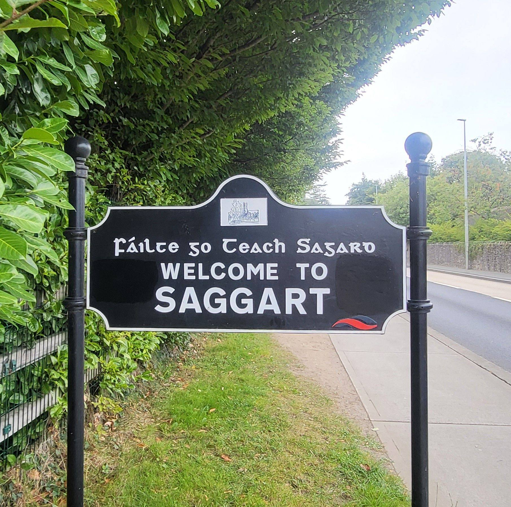

Our area.
Our story.
Together.
Discover how Saggart and Citywest have grown, learn about who has made this area home and see how the community is flourishing together.

Begin with place, heritage and community
About S&CT
Local residents working together
Saggart & Citywest Together is a volunteer-led, non-party-political community group. We welcome everyone in the community to take part, strengthen equal access and participation, challenge racism and help make the area safe, welcoming and vibrant.
Our workSaggart & Citywest
Two places, seen together
Editorial illustrations grounded in recognisable local landmarks, landscape and connections.


Ready to play?